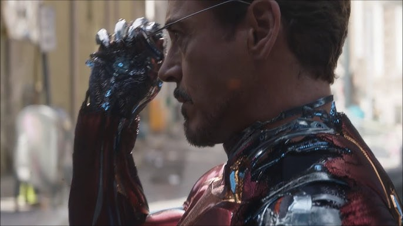
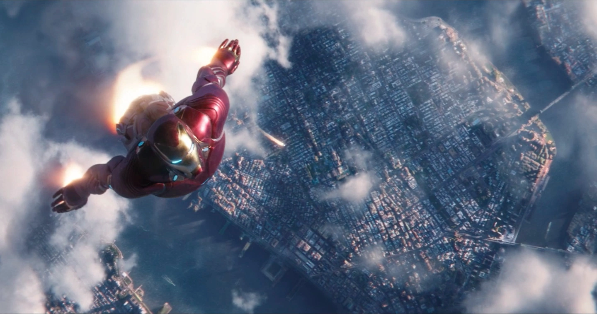

My fictional character is Iron Man!

Iron Man, also known as Tony Stark, is a genius inventor, billionaire, and philanthropist who becomes one of the most iconic superheroes in the Marvel Universe. With his advanced intellect and a penchant for creating cutting-edge technology, Stark designs the Iron Man suit, a powerful piece of armor that grants him enhanced strength, flight, and an array of weapons. Initially a self-absorbed weapons manufacturer, Tony's life takes a dramatic turn when he is captured by terrorists and forced to create a weapon of mass destruction. Instead, he builds the first Iron Man suit to escape, marking the beginning of his transformation into a hero. Driven by a sense of responsibility and a desire to protect the world, Iron Man fights to thwart threats to humanity, often at great personal cost. His complex character is defined by his intelligence, wit, vulnerability, and the enduring struggle to balance his personal life with his superhero duties.
Iron Man Suit Up
Fan Art

This image depicts the scene in Avengers Infinity War when Iron Man combines his suit's legs and turns it into one large booster so he could fly in the air. He had to do this so he could catch up to the space ship that Doctor Strange and Spider-Man were being taken away on. Thankfully, Iron Man caught up in time and was able to give Spider-Man his Iron-Spider suit so he could survive in space. He then proceeded by shoot a hole in the spaceship so the man that was torturing Docotr strange would fly into space and die to the freezing cold of space. He then closed up the breach and discussed with Doctor Strange about what they would do next.
Iron Man Flying Into the sky